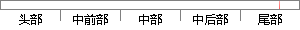

找到已经通过审核且将准备发布的问卷，点击操作列里的发布问卷按钮发布问卷。
片段位置图

相似结果|
相似片段 1：就业办审核人员通过查看问卷内容，检查是否内容是否与题目相符，是否能够起到调查的目的等。5．如满足要求，就可点击发布按钮发布该份问卷。否则结束操作。6．问卷通过审核，成功发布、显示后，问卷审核的业务流程
相似片段 2：(3)项目发布用例分析。项目管理员(或超级管理员)选择项目列表中的项目，若项目通过了审核还未发布，项目管理员点击上面的“发布”按钮，系统弹出项目发布的对话框，项目管理员设置问卷有效期和选择问卷名称
|
※ 片段修改建议 ※
近似词参考：- 已经：已
- 通过：经由过程
- 审核：考核
- 准备：筹办 预备 筹备
- 发布：公布
- 操作：操纵
- 发布：公布
- 发布：公布
系统自动生成语句： 找到已经由过程考核且将筹办公布的问卷，点击操纵列里的公布问卷按钮公布问卷。
注：本片段修改建议为系统自动生成，仅供参考。